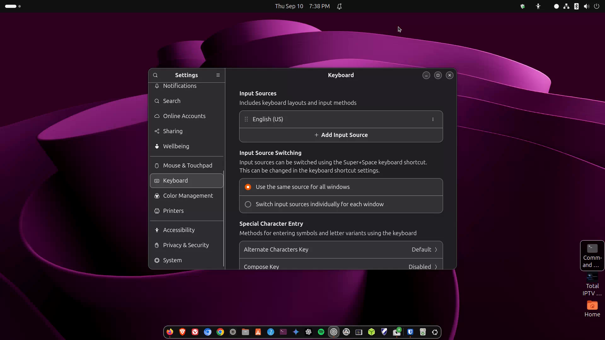

Screenshots, clipboard, shortcuts
Capture the screen, copy-paste habits, and everyday keyboard shortcuts.

media/images/07-screenshots.png with a GTR capture when ready.
Steps
- Press Print Screen (PrtSc) to open the screenshot UI. Choose screen, window, or selection. Save or copy to clipboard.
- On many Ubuntu GNOME setups, Shift+PrtSc or the screenshot app also works — try PrtSc first.
- Clipboard: Ctrl+C copy, Ctrl+V paste, Ctrl+X cut — same as Windows in most apps.
- Learn a few shortcuts below; they save a lot of mouse travel.
Handy shortcuts
- Super — Activities overview
- Alt+Tab — switch windows
- Super+Left / Super+Right — tile window to half screen
- Ctrl+Alt+T — open Terminal (very common)
- Ctrl+L in Files — type a path
- Ctrl+H in Files — show hidden files
Terminal paste In the Terminal, paste is often Ctrl+Shift+V (because Ctrl+V means something else in terminals). Lesson 8 covers this.